Merzouga est une destination mythique du sud-est marocain, celebre pour les dunes de l'Erg Chebbi et ses paysages desertiques.
La region propose des experiences uniques: bivouac, lever de soleil sur les dunes, balades a dos de dromadaire et musique gnawa.
Entre aventure et contemplation, Merzouga reste un incontournable pour vivre la magie du desert.
Sites a visiter
01
Dunes de l'Erg Chebbi
Les dunes les plus celebres du Maroc, ideales pour admirer les levers et couchers de soleil.
L'Erg Chebbi à Merzouga est un spectaculaire océan de dunes de sable (erg) situé dans le sud-est du Maroc, près de la frontière algérienne. Ces dunes, parmi les plus hautes du Maroc (jusqu'à 150-160 mètres), s'étendent sur environ 22 km de long et 5 km de large, offrant un paysage saharien emblématique aux couleurs changeantes, du doré au rouge profond.
L'Erg Chebbi est une destination prisée pour les activités de plein air telles que les balades à dos de chameau, les randonnées dans les dunes, et les nuits en bivouac sous les étoiles. C'est un lieu idéal pour vivre une expérience authentique du désert, avec des levers et couchers de soleil spectaculaires qui illuminent les dunes d'une lumière magique.
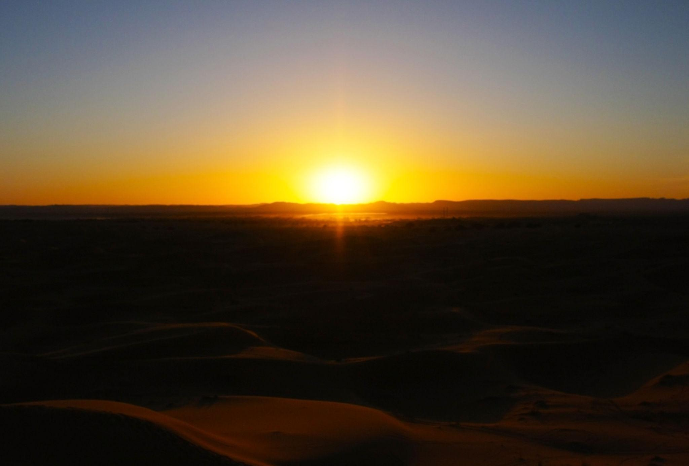
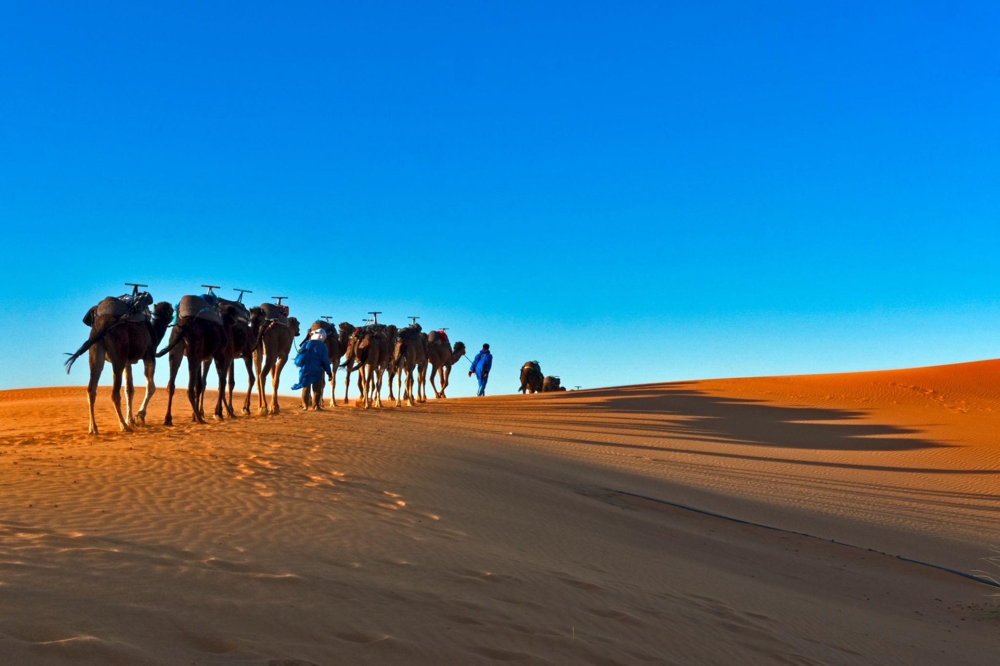
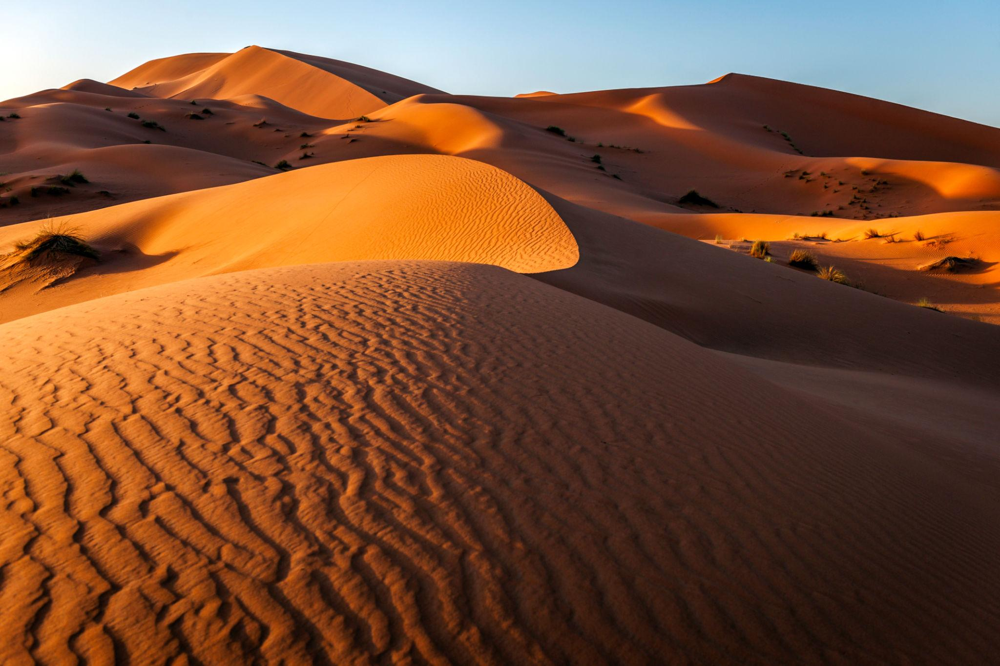
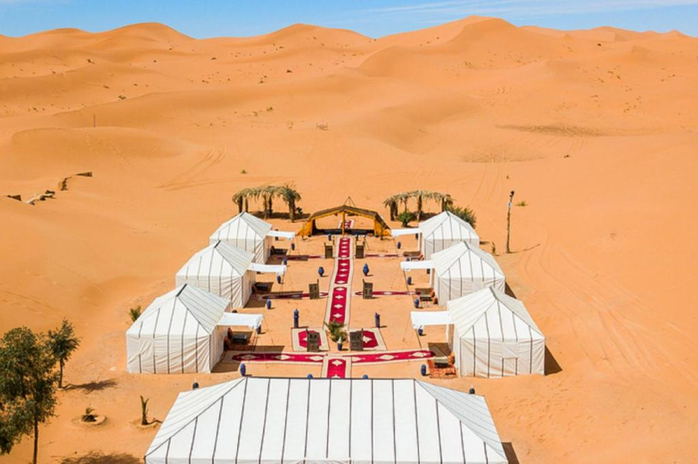
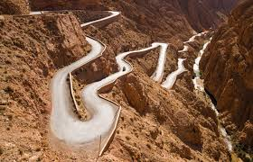
02
Village de Khamlia
Connu pour ses groupes de musique gnawa et son ambiance saharienne authentique.
Khamlia, également connu sous le nom de "Village des Gnawas", est un petit village situé à proximité de Merzouga, dans la région du Sahara marocain. Ce village est célèbre pour sa communauté de musiciens gnawa, qui perpétuent une tradition musicale ancestrale mêlant influences africaines, berbères et arabes.
Les visiteurs de Khamlia peuvent assister à des performances de musique gnawa, caractérisée par des rythmes hypnotiques et des chants spirituels, souvent accompagnés d'instruments traditionnels tels que le guembri (une sorte de luth) et les qraqeb (castagnettes en métal). Le village offre une atmosphère authentique du désert, avec ses maisons en pisé et son mode de vie traditionnel, faisant de Khamlia une étape incontournable pour ceux qui souhaitent découvrir la culture saharienne.
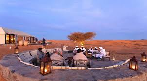
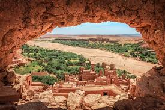
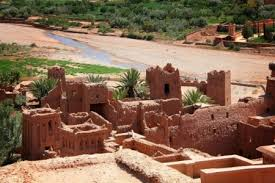
03
Lac Dayet Srij
Lac saisonnier ou l'on peut observer des oiseaux migrateurs selon la periode de l'annee.
Le lac Dayet Srij est un lac salé saisonnier situé à proximité de Merzouga, dans la région du Sahara marocain. Ce lac se remplit d'eau pendant les périodes de pluie, créant un habitat temporaire pour une variété d'oiseaux migrateurs et d'autres espèces de la faune saharienne.
Bien que le lac puisse être asséché pendant les mois les plus chauds, il offre une expérience unique pour les visiteurs qui ont la chance de le voir rempli d'eau, avec des reflets magnifiques des dunes environnantes et une abondance d'oiseaux tels que les flamants roses, les hérons et les canards. Le lac Dayet Srij est un lieu idéal pour les amateurs de nature et de photographie, offrant une perspective différente du paysage désertique de Merzouga.
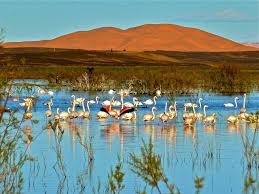
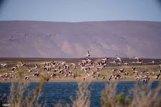
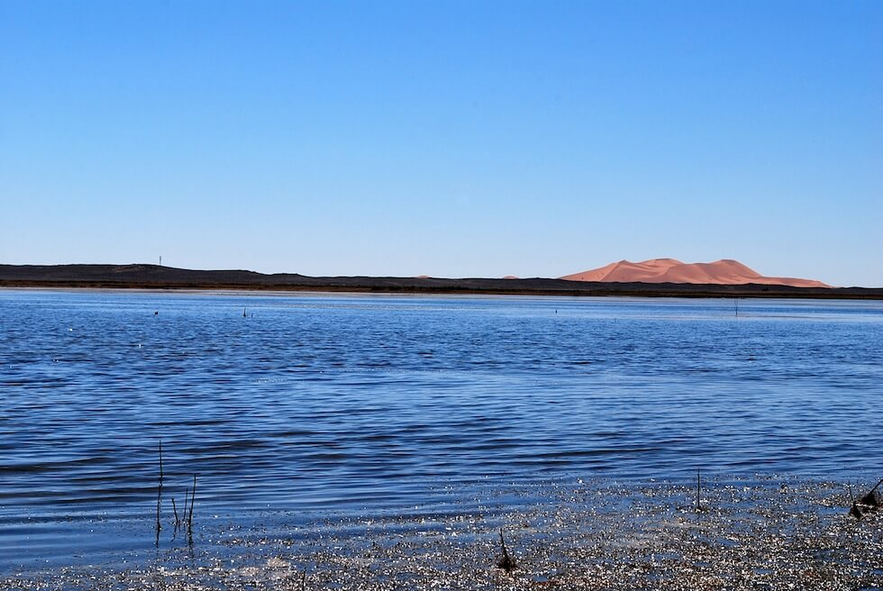
04
Bivouac dans les dunes
Experience phare de Merzouga: nuit en camp, ciel etoile et diner autour du feu.
Passer une nuit en bivouac dans les dunes de Merzouga est une expérience inoubliable qui permet de se connecter pleinement avec la magie du désert. Les visiteurs peuvent s'installer dans un campement traditionnel, souvent composé de tentes berbères confortables, au cœur des dunes de l'Erg Chebbi.
La soirée commence généralement par un dîner autour du feu, où les voyageurs partagent des plats locaux et écoutent de la musique traditionnelle gnawa sous un ciel étoilé d'une clarté exceptionnelle. Le silence du désert, ponctué par les sons de la nature et les histoires racontées par les guides locaux, crée une atmosphère unique propice à la contemplation et à la détente. Se réveiller au lever du soleil avec une vue imprenable sur les dunes environnantes est l'un des moments forts de cette expérience authentique du Sahara.
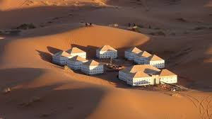
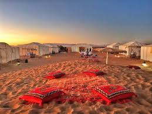
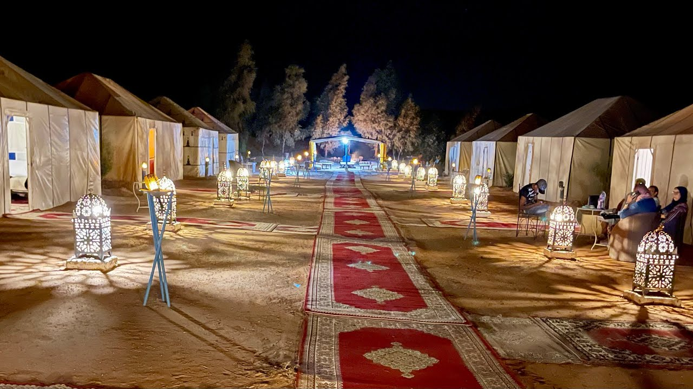
Gastronomie
Cuisine du desert
01
Medfouna
Pain farci parfois appele "pizza berbere", cuit au feu de bois.
02
Tagine berbère
Tagine simple et savoureux avec legumes de saison.
03
The saharien
The a la menthe tres mousseux, symbole d'hospitalite.
04
Dattes et fruits secs
Produits energiques typiques des regions oasiennes.